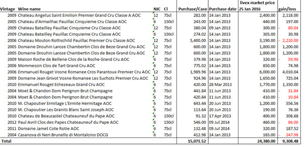

Сохраните и приумножьте деньги
в 2016-м и последующие годы,
невзирая на кризис
Для кого это предложение
Для тех, кто ищет альтернативу покупке недвижимости
На основе тщательного анализа вы получаете винный портфель и прогноз прибыли. И спокойно выжидаете роста цен на выбранное вино через несколько лет (не нужно постоянно мониторить котировки, как при покупке акций). Тот же депозит, только в разы выгоднее
Для тех, кто выбирает источники пассивного дохода
Не нужно искать арендаторов (как при сдаче в аренду квартиры), периодически вкладывать деньги в ремонт, нанимать управляющую компанию (как при покупке коммерческой недвижимости). Вы получаете доход без суеты
Для тех, кого беспокоит колебание курса валют
Ваша инвестиция гарантированно становится дороже с годами и не зависит от скачков курса рубля, доллара и другой валюты, ее не съедает инфляция
Вы гарантированно получите прибыль с ликвидного товара, который можете продать в любой момент, не потеряв ни копейки
вложенных средств или приумножить их в 1,5-2 раза и более через несколько лет.
Инвестиции в коллекционное вино –
выгодная альтернатива депозиту, покупке недвижимости
и другим вложениям
| Вино | Депозит | Недвижимость (квартира и коммерческая) | Акции | |
|---|---|---|---|---|
| Прибыль |
12% в год в валютеЭто в 6 раз больше, чем по депозиту в долларах и в 12 раз больше, чем в евро. А на некоторые выдержанные вина прибыль - в несколько раз больше |
Менее 1% годовых в евро, 2% в долларах, до 9,5% в рубляхпо данным Сбербанка России |
Менее 6% от сдачи в арендуПо данным экспертов «Инком-Недвижимость» прибыль от сдачи в аренду квартир опустилась ниже доходов по банковским депозитам. В 2016 года арендная доходность «однушки», приобретенной на вторичном рынке, составляет в среднем 5,3% годовых. А окупаемость – от 21 года. |
Низкая по пакетным акциям, не всегда прогнозируемая по акциям одной компании |
| Надежность |
5Вина хранятся на акцизных складах в Англии. Вам не нужно заботиться о сохранности. Эксперты по элитным винам создают идеальные условия для их хранения |
4Банк может ликвидироваться. Государство охраняет депозиты только до 1.4 млн.руб |
4Нужен поиск арендаторов и опыт – выбрать платежеспособного, готового к долгосрочной аренде. На фоне кризиса бизнес арендаторов коммерческой недвижимости «сворачивается», а у физлиц спросом пользуется лишь дешевая недвижимость |
5Компании разоряются, акции дешевеют. Нужно быть экспертом в этой сфере или платить на постоянной основе профессионалу, который поможет «не прогореть» |
| Подверженность инфляции, сохранность стоимости вложений |
Не подвержено инфляцииВы получаете прибыль в валюте, а не рублях |
Тело депозита обесценивается, если депозит в рубляхПо данным Росстата, по итогам 2015-го инфляция составила 12,9% (в 2014 г. она была равна 11,4%). Это означает, что вкладчики остались в убытке |
Стоимость недвижимости падаетПри необходимости продать недвижимость, вы получаете убыток |
Стоимость может резко падать,если бизнес «просел», и годами оставаться низкой. Чтобы продать акции, иногда нужно ждать годами взлета их стоимости |
Вино дорожает быстрее,
чем акции ведущих мировых компаний
15/02/2016
270
Минимум риска
и доход в валюте
Инвестиции в вино являются идеальным способом понизить совокупный портфельный риск, так как перемены в финансовом секторе не отражаются на рыночной стоимости вин
Стабильный рост стоимости со временем
Инвестиции не в виртуальные акции компаний, а в реальный продукт - физический актив, который не обесценится с течением времени
0% налоги
Вы не платите налог на прибыль, полученную от продажи вина. Товар не облагается пошлиной и НДС (если хранится на акцизном складе в Англии)
Без влияния инфляции
В период нестабильности инвесторы все чаще задаются вопросом, как сохранить свои сбережения. Мы предлагаем хранение и преумножение капитала в валюте за рубежом
Вам выгодно инвестировать деньги в вино
с нашей помощью
ВЫ ПОЛУЧАЕТЕ ПРОГНОЗ
ВАШЕЙ ПРИБЫЛИ БЕСПЛАТНО
Бесплатный подбор винного портфеля: анализ рынка и выявление лучших предложений, которые обладают высоким инвестиционным потенциалом
ПРАВО СОБСТВЕННОСТИ
Вы получаете право собственности. Все вина регистрируются лондонским акцизным складом London City Bond на ваше имя и получают уникальный номер
ОТСУТСТВУЕТ МИНИМАЛЬНЫЙ
ИНВЕСТИЦИОННЫЙ ПОРОГ ИНВЕСТИЦИЙ
Минимальный размер инвестиций у конкурентов в Лондоне 10 000 - 20 000 фунтов, а с нами вы инвестируете любую сумму на ваше усмотрение
ОТЧЕТНОСТЬ
По первому требованию вы получаете отчет о состоянии вашего хранилища (фотографии с высоким разрешением)
ВЫ ПРОДАДИТЕ ВИНО
ПО ЛУЧШЕЙ ЦЕНЕ
У вас есть доступ в личный кабинет на сайте CRU, где вы можете следить за изменениями рыночной стоимости вина (данные предоставляется международной винной биржей Liv-ex и обновляются каждые 30 минут)
ОТВЕТСТВЕННОСТЬ ЗА ВАШУ
СОБСТВЕННОСТЬ БЕРЕМ НА СЕБЯ
Наша современная система управления сочетает в себе высокое качество хранения вин на складе London City Bond с доведенными до совершенства технологиями по управлению коллекцией в режиме онлайн. Вина застрахованы в течение всего срока хранения
БЕЗУПРЕЧНОЕ ХРАНЕНИЕ
МАРОЧНЫХ ВИН
Склад - в руках опытной и преданной своему делу команды. Он построен специально для хранения марочного вина. Идеальные условия хранения поддерживаются благодаря датчикам влажности и температуры с проверкой каждые 30 минут
ПРОДАЖА В ЛЮБОЙ МОМЕНТ
Вы можете гарантированно продать свои вина CRU по рыночной стоимости (рыночная стоимость определяется винной биржей Liv-ex)- 10% комиссия. Хотите продать дороже? Выставляйте на продажу все или часть своих вин на интернет платформе CRU и международной бирже и устанавливайте цену самостоятельно
ПРЕСТИЖ И ПРЕДМЕТ ГОРДОСТИ
Ваши коллеги, друзья и конкуренты будут завидовать не только вашим доходам, но и их источникам. Не каждый инвестор может сказать, что у него есть коллекция марочных вин в Лондоне. Ваши вложения – признак изысканного вкуса. А вина, купленные с нашей помощью, гарантированно подлинные
А легальный ли это бизнес? Да.
Вам не придется думать, как привезти вино в Россию и как
растаможить его. Коллекция хранится на акцизных складах
в Англии и не облагается налогами при продаже.
КОНСУЛЬТАЦИЯ ЭКСПЕРТА
ПО ИНВЕСТИЦИЯМ В ВИНО – БЕСПЛАТНО
Оставьте заявку и получите бесплатную консультацию, какие вина подходят для инвестиций, в том числе долгосрочных, и какую прибыль можно получить с вашего инвестиционного бюджета
Почему нам доверяют клиенты
Команда CRU работает в Великобритании с 1982 года. За это время мы создали широкую сеть поставщиков вин, поэтому вы имеете доступ к эксклюзивным винам лимитированного выпуска лучших производителей мира, которые самостоятельно купить практически невозможно.
CRU означает «элитарность» вина (виноград выращен на участке земли, исторически лучшем, чем окружающие).
Мы всегда в курсе тенденций винной индустрии Франции и прочих городов Европы, Азии и других континентов. Знаем, какие вина получили наивысшие рейтинги на Лондонской бирже вина, лучшие отзывы Роберта Паркера и других винных критиков.
С 2010 года работаем в Гонконге. С 2014 года в Сингапуре.
Офис в Бордо – с 2015 года. Лично знакомы и сотрудничаем с производителями элитных вин.
Поэтому вы можете быть уверены, что мы подберем для вас оптимальный портфель вин, который станет выгодной долгосрочной инвестицией и принесет стабильную прибыль.
292 клиента
инвестировали в вино, хранят его на складе CRU, имеют возможность следить за своими винами в режиме онлайн и выставить их на продажу в любое время
Более 11 500
частных клиентов
купили вино лучших производителей у CRU и насладились изысканным вкусом
Более 540 оптовых
клиентов
являются нашими постоянными заказчиками
378 эксклюзивных
поставщиков вина
со всего мира. Подберем для вас самые перспективные вина, идеальные по вкусовым качествам, востребованности, долговечности
Гарантия
на товар на весь срок хранения на складе CRU до момента продажи. Мы отвечаем за подлинность и соблюдение условий хранения вина
34 года - опыт и практика
Анализируем рынок вин. Всегда в курсе, вино урожая какого года будет дорожать, а какое приобретать не стоит
Вложив 25 000 евро, наши клиенты получают прибыль
в среднем 15 000 евро, продав вино через 5 лет.
ПОДБОР ВИННОГО ПОРТФЕЛЯ – БЕСПЛАТНО
Оставьте заявку и получите подбор вин, обладающих лучшим потенциалом, и прогноз роста их стоимости
Какие услуги мы выполним для вас
ФОРМИРОВАНИЕ
ПОРТФОЛИО
Бесплатно!
С учетом вашего инвестиционного бюджета вы получаете подборку вин и анализ перспектив инвестирования в них (учитываем индексы Лондонской биржи вина, собственную статистику, наработанную более чем за 30 лет, и другие показатели)
ХРАНЕНИЕ
- В месяц – 0,55 фунтов стерлингов (плюс НДС) за кейс
- В год – 6,60 евро (плюс НДС) за кейс
- Без сбора на загрузку склада товаром
- Без трансферных платежей
- Оплата посуточная (а не за квартал или год). Как только кейс покидает склад, оплата за хранение товаров прекращается
ПРОДАЖА ВИНА
- 1 вариант продажи – Срочная продажа
- 2 вариант продажи – Плановая продажа
Продажа, как правило, происходит через 5-7 лет, когда прибыль составляет 60-80% и более от первоначальной стоимости.
Рекомендуем планировать инвестиции на срок от 5 лет. Комиссия от суммы продажи - 10 %.
Продать вино дорого можно. Это не миф! Главное правильно составить прогноз
Château d'Yquem, закупоренная в 1811 году, недавно официально стала самой дорогой бутылкой белого вина во всем мире. Один из коллекционеров приобрел ее за 75 000 фунтов (примерно 120 тысяч долларов). Рекордная стоимость бутылки обусловлена еще и тем, что ее активно хвалили мировые критики, называющие напиток одним из лучших, среди когда-либо созданных в Бордо. Оценка 200-летней бутылки Château d'Yquem - 100 баллов из ста возможных. Для этого было проведено множество проверок, полностью подтвердивших эксклюзивность напитка.
По материалам: http://guinness-records.info/samaya-dorogaya-v-mire-butylka-vina/
Примеры успешных инвестиций
DRC, Romanee Conti, 2000
LWIN 10286872000Стабильный доход
Lafite Rothschild, 1982
LWIN 10118721982Сверхприбыль
Cos d'Estournel, 2000
LWIN 10087882000Сверхприбыль
Посмотрите примеры винных портфолио
наших клиентов
Знаем, что порекомендовать вам, исходя из вашего бюджета. Разбираемся как в первых GRAND CRU Бордо винах, например как Château Margaux, так и в шампанских винах, которые могут зреть десятилетиями, улучшая свой вкус - Dom Pérignon, Louis Roederer Champagne. Поможем вам выбрать долговечное вино, разобраться в прогнозах и продать по самой выгодной цене.
Существует множество рейтингов и таблиц: гид по винтажам журнала Decanter, карта винтажей журнала Wine Spectator, таблица Роберта Паркера. Изучая их и применяя свои методы отбора, подберем для вас такие вина, которые за несколько лет принесут прибыль более 50% от вложений.
Прибыль 12% годовых

Отзыв клиента.
После того, как инфляция «съела» часть депозита в рублях, и понимая бесперспективность депозита в валюте под 1-2%, решил инвестировать в вино. Эта инвестиция не только греет душу, но и реально наполняет кошелек (в валюте, что особенно радует!). Инвестировав 2 года назад £15 000, получил прибыль £1 000 фунтов, продав лишь 3 кейса вина Montrose 2010 купленных за £1 323 за кейс, при этом рыночная стоимость вин, оставшихся в коллекции, стабильно растет. Спасибо CRU. Не нужно разбираться в вине. Нужно просто найти тех, кто отлично в этом разбирается. Хочу выждать года 3-4, чтобы сорвать большой куш.
Андрей Ермолов, частный предприниматель
Прибыль 20% годовых
Прибыль за 3 года составила 60% (20% годовых)
Отзыв клиента.
Инвестиции в вино для меня не только способ заработать, но и сохранить в кризис сбережения. Спасибо за профессиональный подбор вина и диверсификацию рисков. Благодаря этой инвестиции я привлек крупного зарубежного партнера в свой бизнес (начало сотрудничеству положил диалог о хобби), который уже 10 лет коллекционирует вино, и был приятно удивлен, что винная культура уже развивается в России
Игорь Нефедов, директор IT-компании, Москва
Приумножьте капитал, инвестируя в вино
Заявка
Оставьте заявку или позвоните
8 800 800 1234Винное портфолио - бесплатно
Под сумму ваших инвестиций разрабатываем винное портфолио, которое обладает высоким потенциалом роста цены с течением времени. Проводим анализ рынка, поиск лучших предложений. Вы получаете КП (список вин и их инвестиционные характеристики: описание и прогнозы)
Право собственности и прибыль от продажи
После того как вы одобрили КП, выставляем счет. После оплаты право собственности на вина переходит к вам. Все вина регистрируются лондонским акцизным складом London City Bond на ваше имя. Осталось выждать время и продать вино с прибылью 60-80% и выше